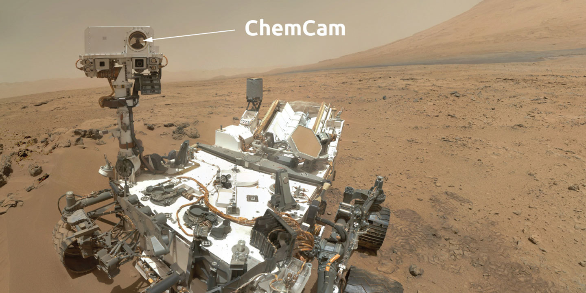
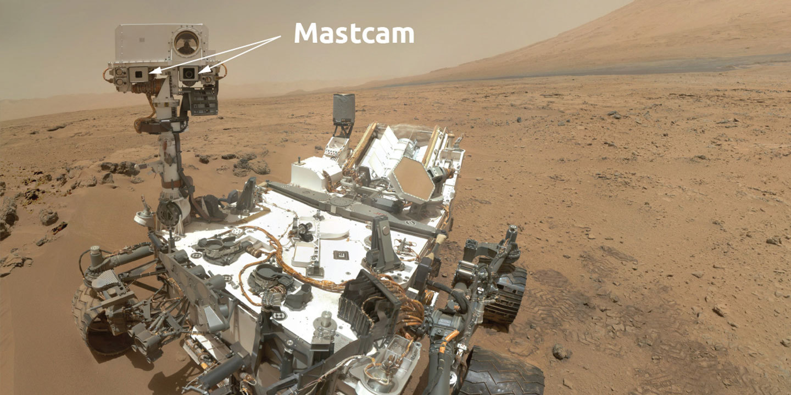
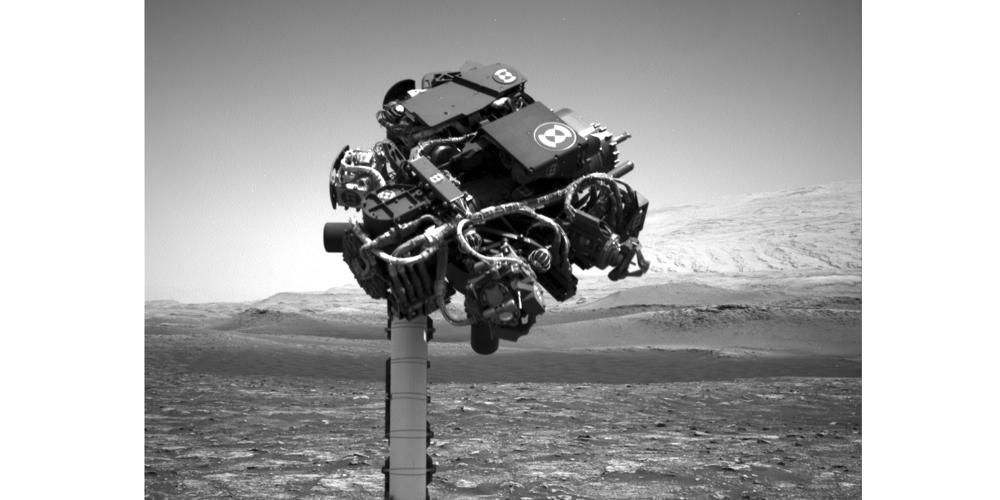
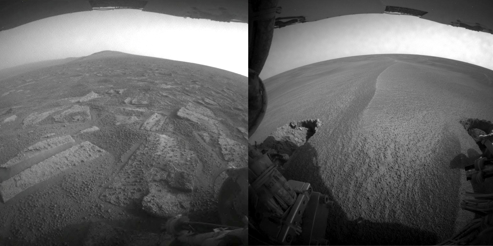
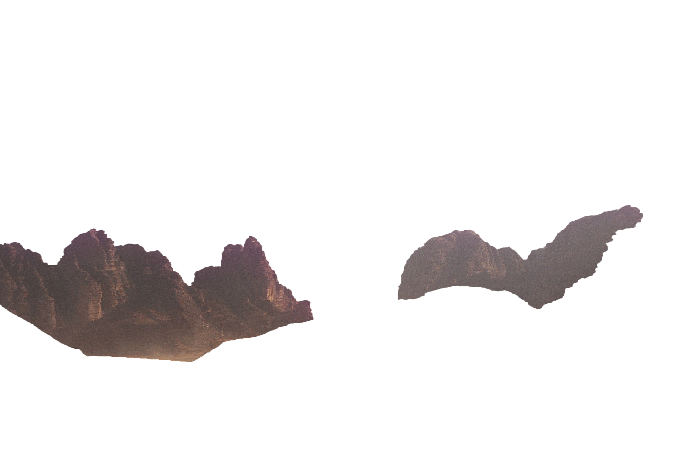
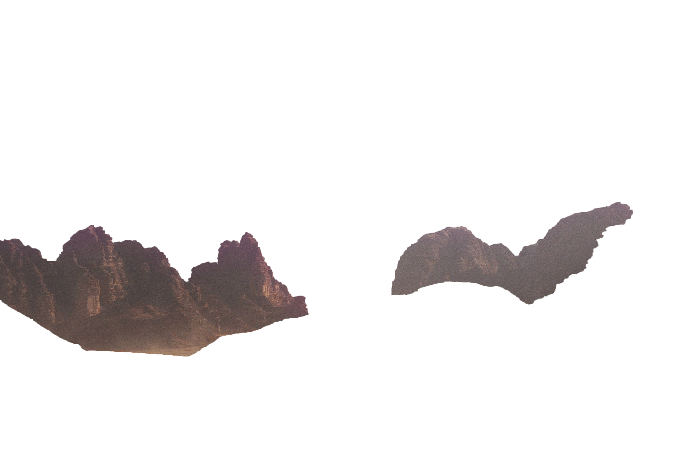

Curiosity is a car-sized Mars rover designed to explore the Gale crater on Mars as part of NASA's Mars Science Laboratory (MSL) mission. ... The rover is still operational, and as of May 26, 2021, Curiosity has been active on Mars for 3130 sols (3215 total days; 8 years, 293 days) since its landing (see current status).

As the name implies, ChemCam is actually two different instruments combined as one: a laser-induced breakdown spectroscopy (LIBS) and a Remote Micro Imager (RMI) telescope.

The Mast Camera, or Mastcam for short, takes color images and color video footage of the Martian terrain. The images can be stitched together to create panoramas of the landscape around the rover.

Navigation Camera
Main job: Aid in autonomous navigation

Hazard Avoidance Cameras
The cameras need to see far to either side because unlike human eyes, the Hazcam cameras cannot move independently; they are mounted directly to the rover body.
You can pic some random photos from diferent cameras
 
